Aktuálna ponuka
Nehnuteľnosti, ktoré ponúkam
16 nehnuteľností na predaj a prenájom. Vyberte typ, alebo napíšte lokalitu.
16 z 16 ponúk
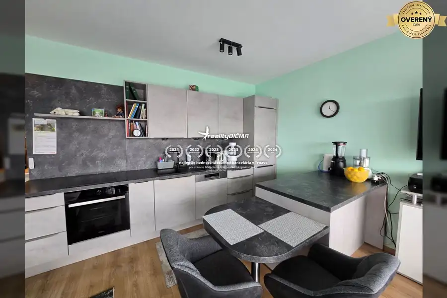
Apartmány6 228 000 €ZUKVE - Apartmán pri mori - na predaj Vrsi 2-izbový Apartmán sa nachádza v budove s celkovým počtom siedmich apartmánov. Apartmán pozostáva z chodby, kuchyne, jedálne, obývačky, kúpeľne, dvoch spální a…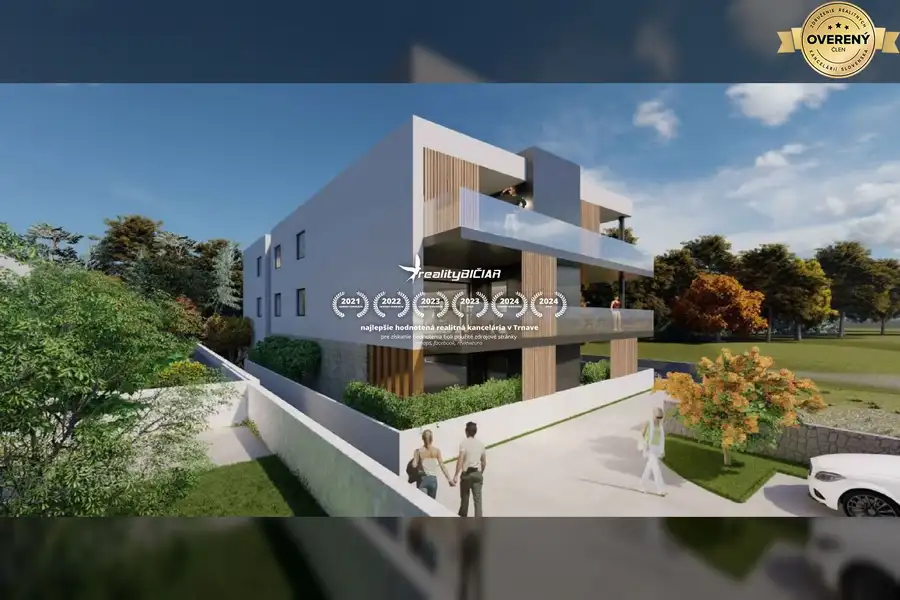
Byt6 299 000 €PRIVLAKA-(S1) dvojizbový apartmán 83,31 m2 v prvom rade pri mori Zadar, Privlaka 2-izbový Apartmán pozostáva z dvoch spální, každá s rozlohou približne 11,1 m2, kúpeľne s rozlohou 4,6 m2, kuchyne s jedálňou a obývacou izbou s rozlohou…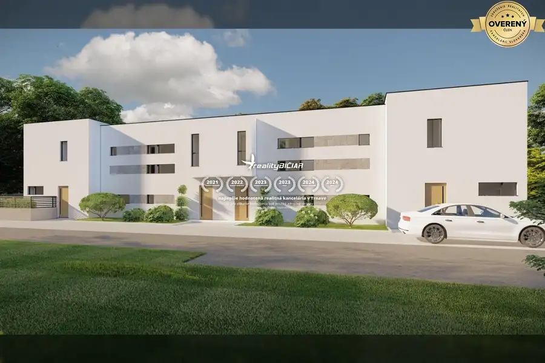
Rodinné domy10 360 000 €NIN - radový dom Nin 3-izbový Dom pozostáva z prízemia so vstupnou halou, kuchyňou s jedálňou, obývacou izbou, kúpeľňou a krytou aj nekrytou terasou a horného poschodia s chodbou,…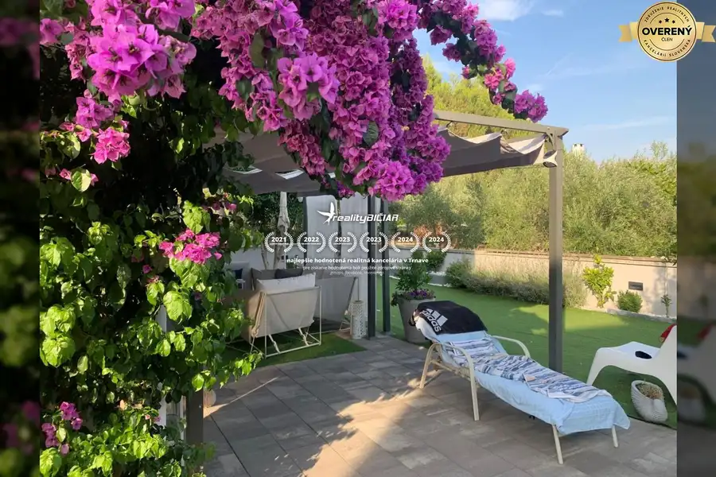
Apartmány10 270 000 €VRSI-MULO-trojizbový apartmán s priestrannou záhradou len 330 m od mor Vrsi 3-izbový Byt pozostáva z kuchyne s obývačkou a jedálňou, troch spální, chodby, kúpeľne, toalety a loggie. Byt má podlahové kúrenie v kúpeľni a klimatizáciu v…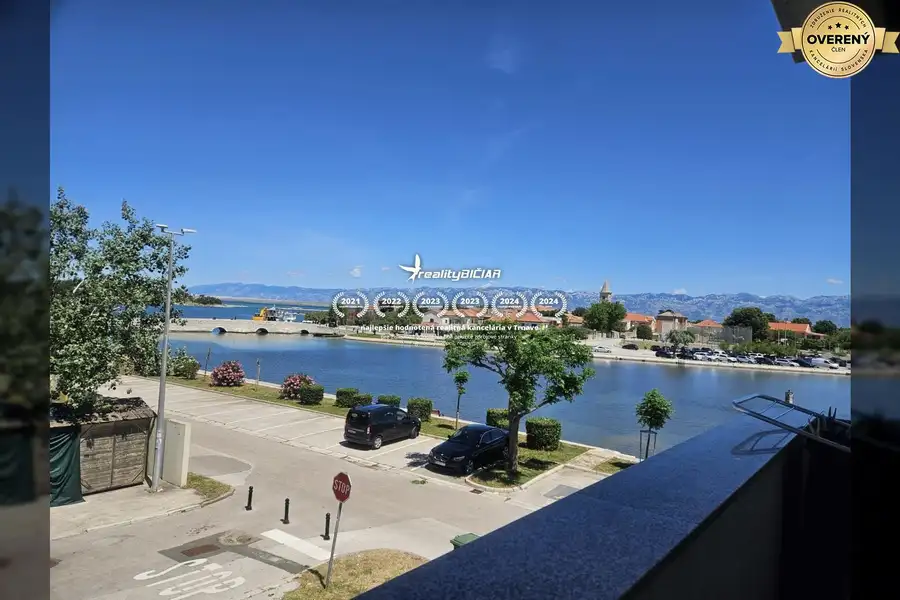
Apartmány7 210 000 €NIN - apartmán na 1. poschodí budovy, prvý rad k moru Nin Apartmán sa nachádza na prvom poschodí budovy a pozostáva z chodby, kúpeľne, kuchyne s jedálňou a obývačkou, dvoch spální, šatníka, úložného…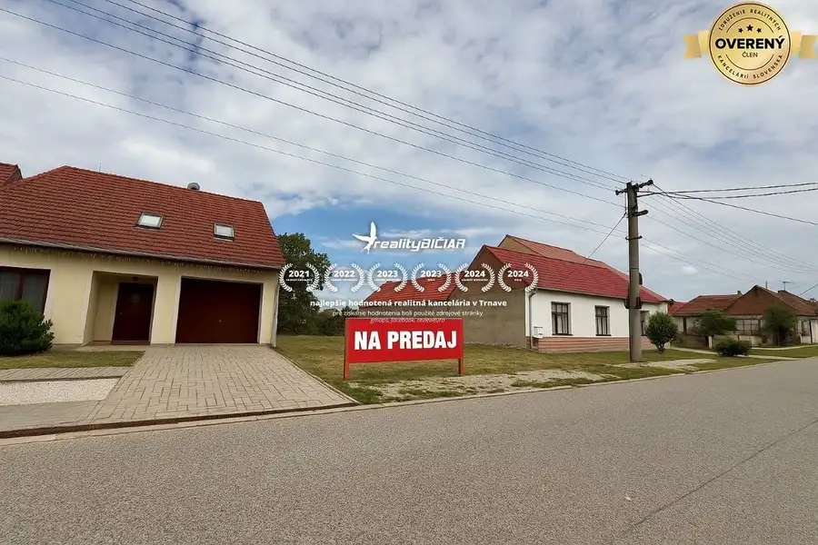
Pozemok2 Cena dohodouPozemok s výborným prístupom – pokojné bývanie v Košolnej Košolná 1222 m² Reality Bičiar ponúka na predaj stavebný pozemok v tichej zastavanej časti obce Košolná, iba 10 minút od Trnavy a cca 40 minút od Bratislavy. Výmera:…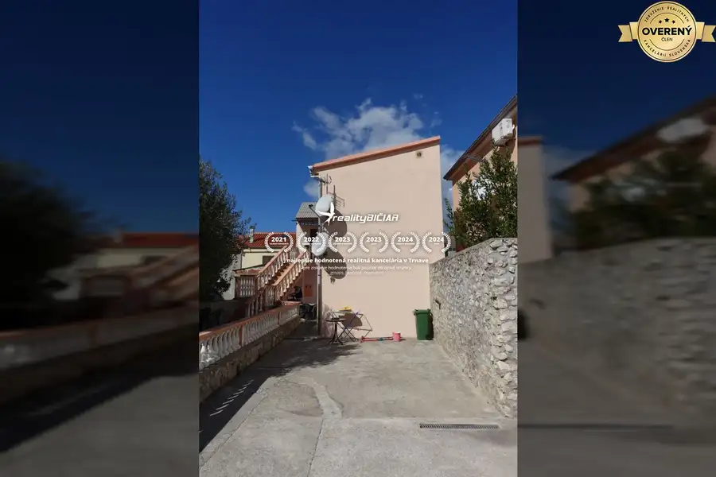
Apartmány10 200 000 €NIN- byt na predaj Nin Obe jednotky sa nachádzajú na prízemí. Byt pozostáva zo vstupnej časti, kuchyne s obývacou časťou, jednej spálne a kúpeľne. Garsónka pozostáva zo…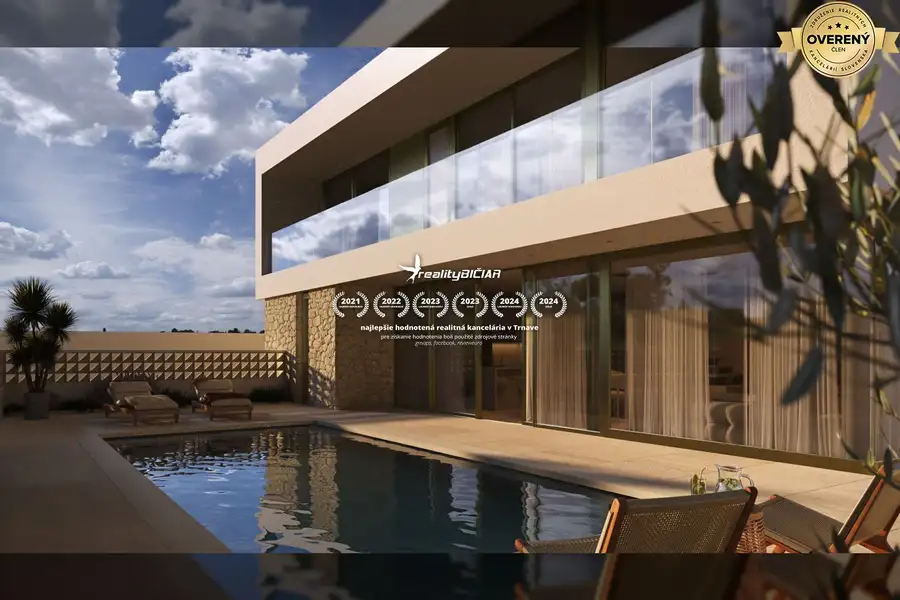
Domy a budovy10 450 000 €VRSI – NOVOSTAVBA – Vila vo výstavbe Vrsi Zastavaná plocha domu je 191,63 m². Dom pozostáva z prízemia a poschodia. Na prízemí sa nachádza vstupná hala, kuchyňa s jedálenskou a obývacou…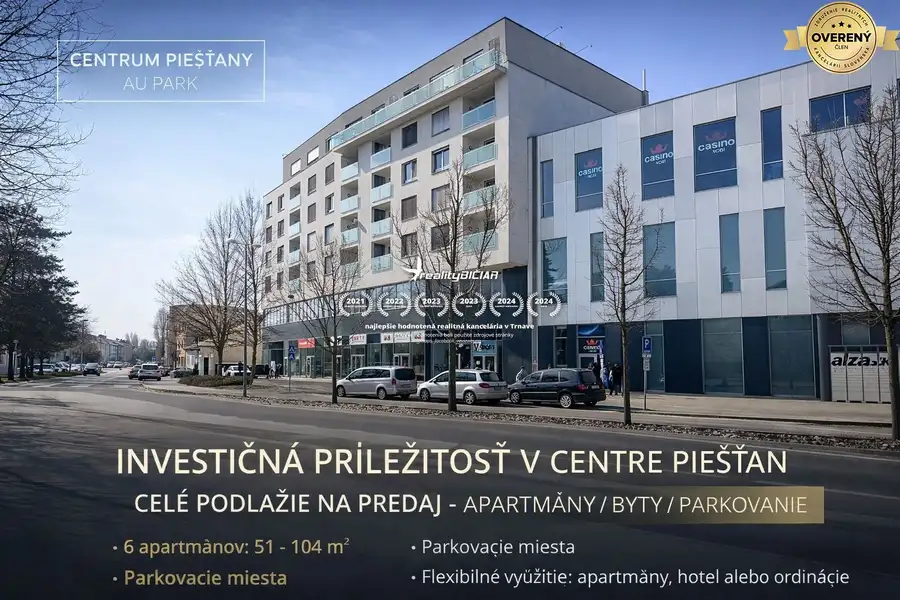
Domy a budovy10 Cena dohodouEXKLUZÍVNE: Celé podlažie v centre Piešťan s projektom apartmánov Piešťany 374 m² Ponúkame na predaj celé podlažie v prestížnej lokalite úplného centra mesta Piešťany, ktoré je súčasťou známeho obchodného centra Aupark. Táto…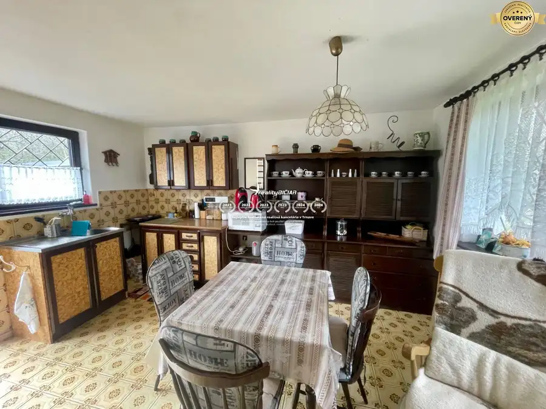
Chaty a chalupy10 53 000 €Murovaná chata nad priehradou v Suchej nad Parnou Suchá nad Parnou 2-izbový60 m² Ponúkame na predaj krásnu murovanú chata komplet so zariadením. Možnosť celoročného bývania. Dispozícia prízemie: obývacia izba s krbom a kuchyňou…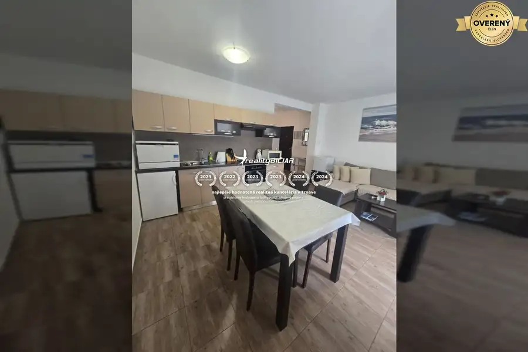
Byt10 230 000 €Vrsi-Mulo – dvojizbový byt na prvom poschodí, 300 m od mora. Vrsi 2-izbový Byt sa nachádza na prvom poschodí budovy. Pozostáva z kuchyne s jedálenskou časťou a obývačkou, kúpeľne, dvoch spální a dvoch balkónov. K bytu patrí…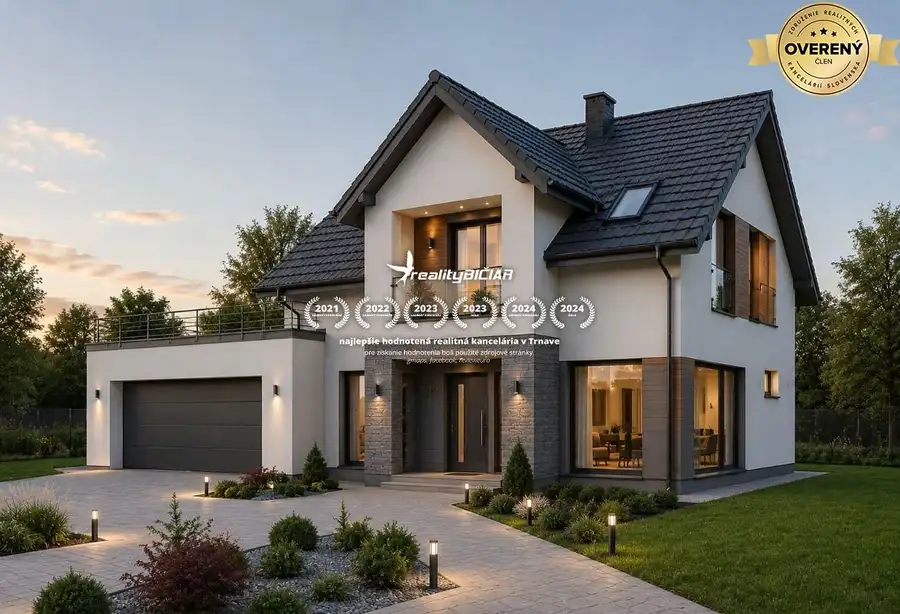
Pozemok 77 330 €Stavebný pozemok v Moravanoch nad Váhom (418 m²) Moravany nad Váhom 418 m² Realitná kancelária reality-Bičiar ponúka na predaj atraktívne stavebné pozemky nachádzajúce sa v novej, koncepčne riešenej lokalite obce Moravany…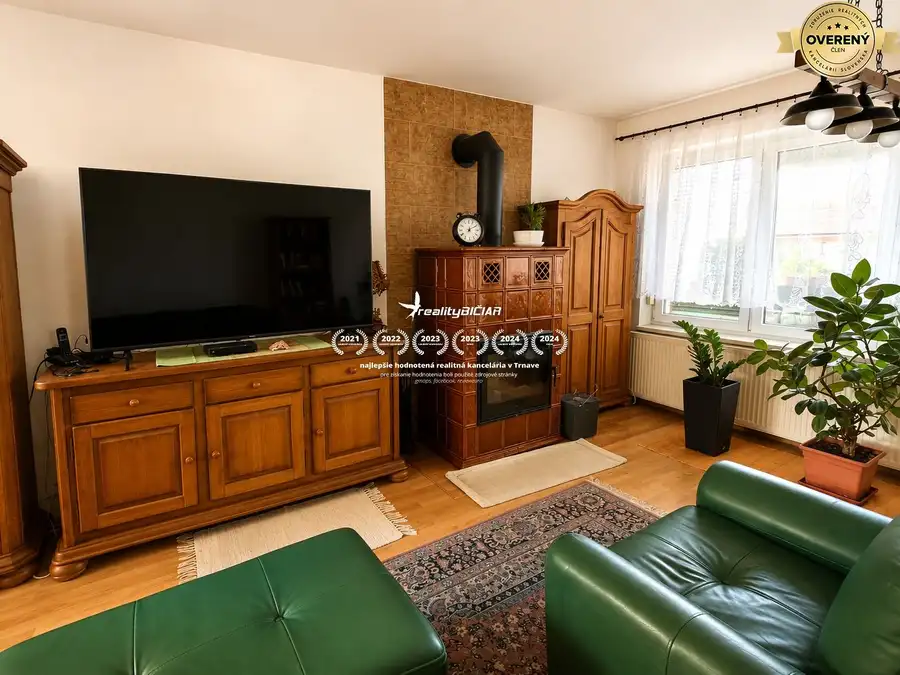
Rodinné domy10 320 000 €Veľký 2-generačný rodinný dom vo vyhľadávanej časti Serede Sereď 7-izbový260 m² reality-Bičiar Vám exkluzívne ponúka na predaj výnimočný, samostatne stojaci 2-generačný tehlový rodinný dom s úžitkovou plochou približne 260 m²,…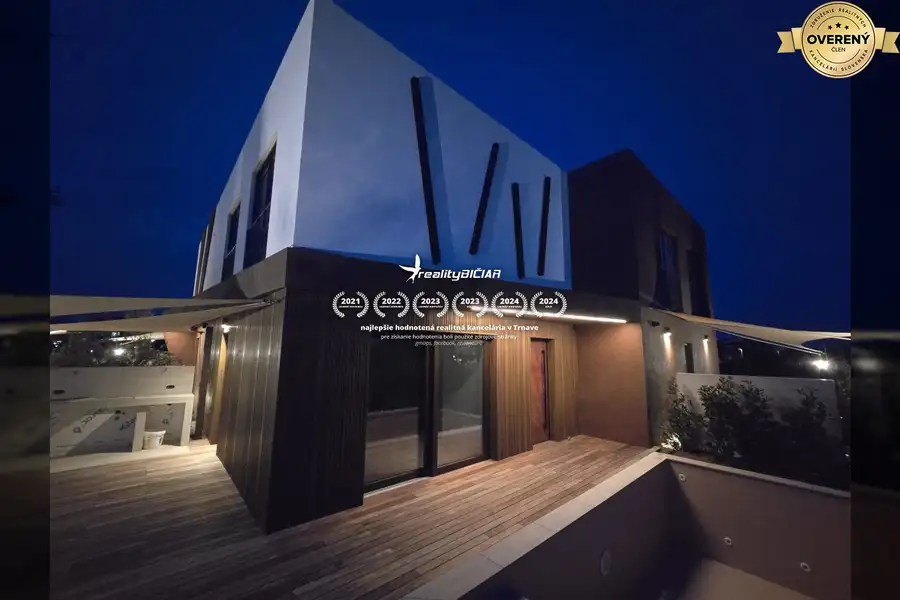
Domy a budovy10 420 000 €Nin – luxusné apartmány v novom projekte s bazénom Zadar, Nin Vila sa vyznačuje prémiovým dizajnom, využíva najnovšie technológie a spĺňa najvyššie stavebné štandardy. Apartmán A3 je momentálne v ponuke za cenu…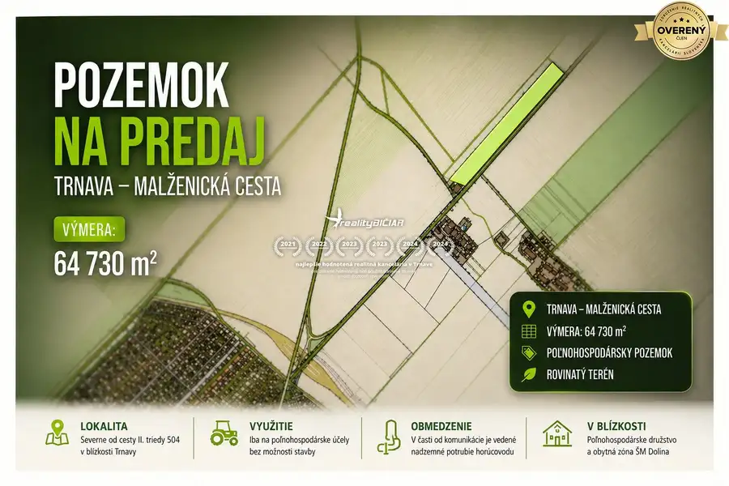
Pozemok Cena dohodouPozemok na predaj – Trnava, malženická cesta Trnava 64730 m² Ponúkame na predaj poľnohospodársky pozemok s celkovou výmerou 64 730 m², nachádzajúci sa v lokalite severne od cesty II. triedy č. 504, v blízkosti…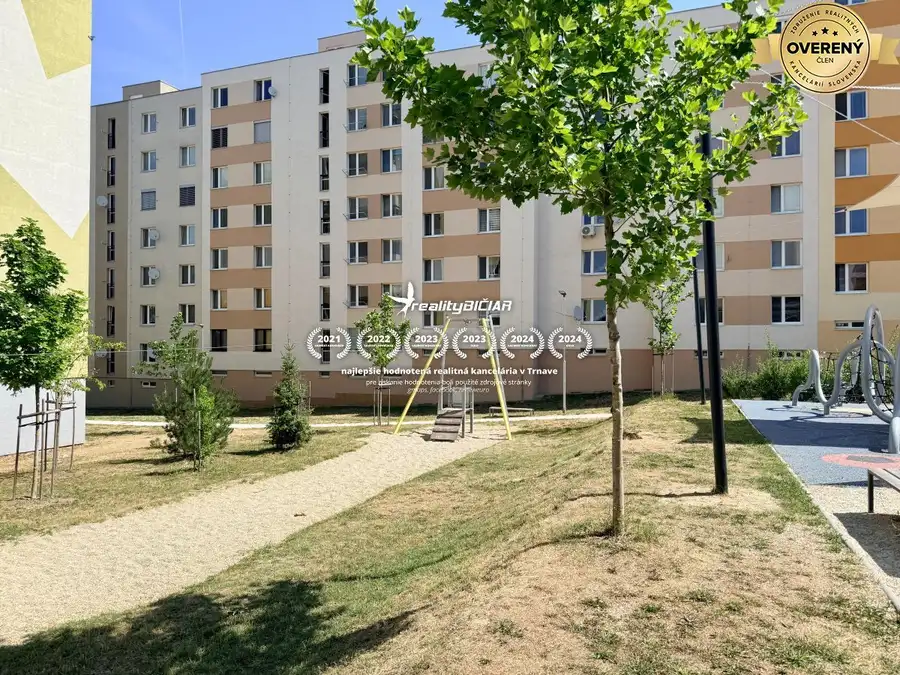
Byt10 145 000 €Na predaj priestranný 3-izbový byt s loggiou na Michalskej ulici Hlohovec 3-izbový70 m²1. podlažie EXKLUZÍVNE | Na predaj priestranný 3-izbový byt s loggiou vo vyhľadávanej lokalite Hlohovca – Michalská ulica. Realitná kancelária reality-Bičiar Vám…Tomuto výberu zatiaľ nezodpovedá žiadna ponuka. Napíšte mi, čo hľadáte.